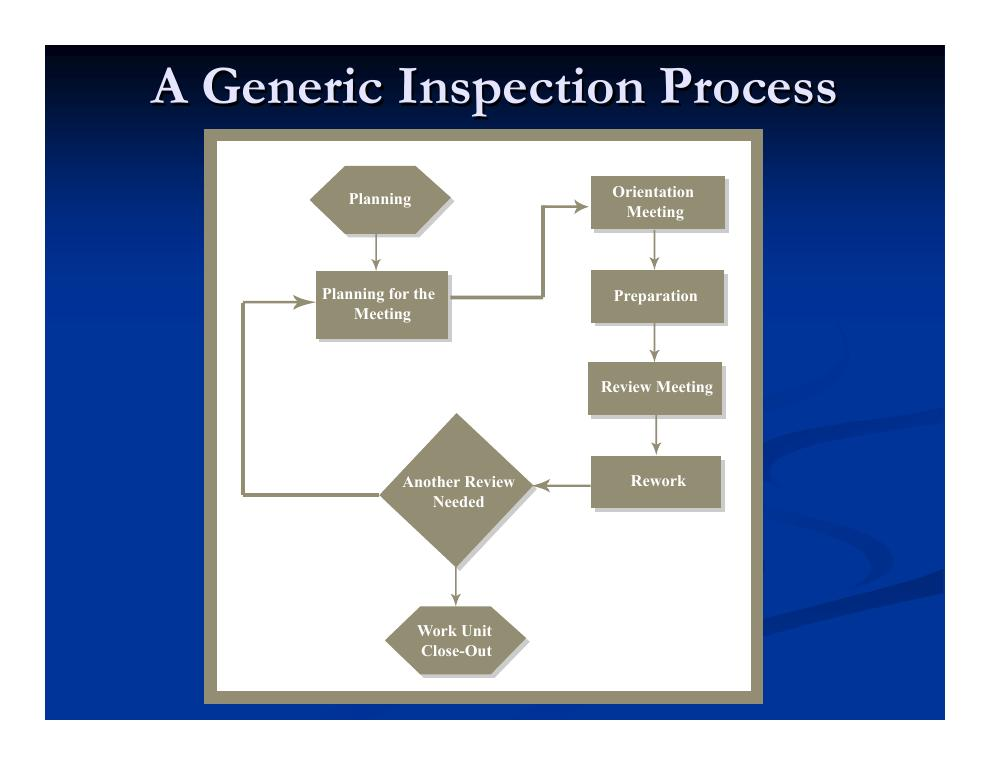
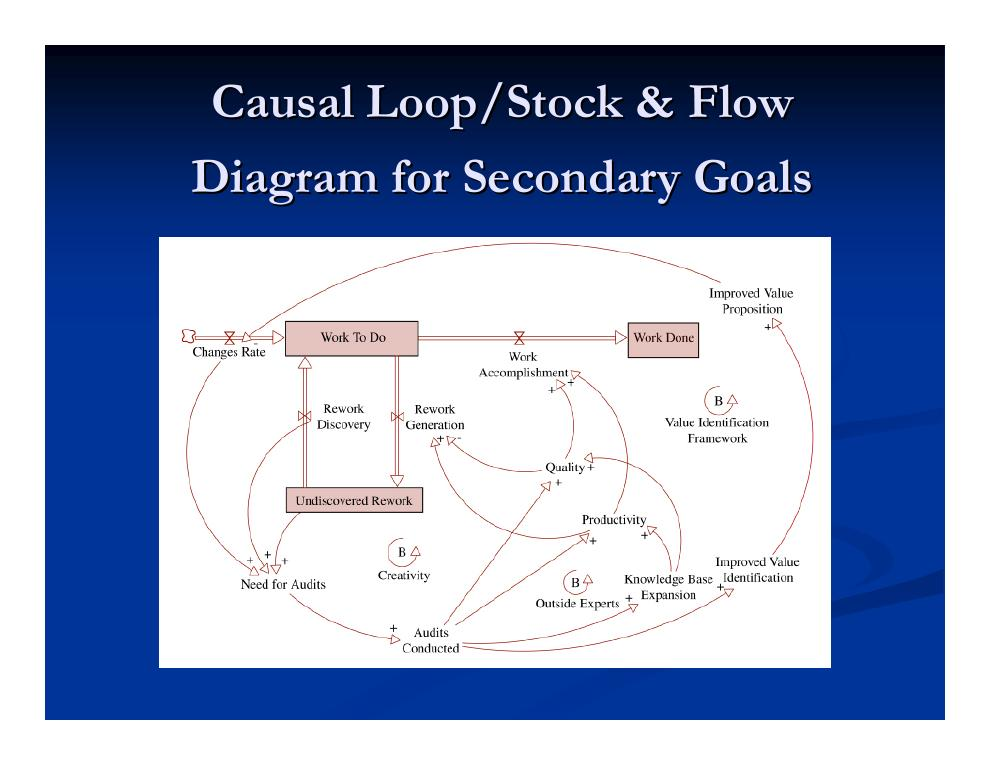
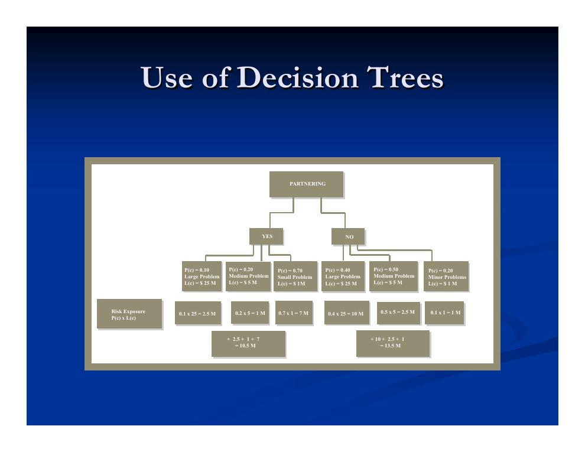

- Review-Logistik: Granularität und die drei Formate im Vergleich
- Funktionen von Reviews und etablierte Reviews der Bauwirtschaft
- Projektaudits: Zweck, Abgrenzung und Umfang
- Audit-Inhalte und Datengrundlage
- Der Audit-Lebenszyklus: fünf Phasen und der Auditbericht
- Änderungsmanagement (Changes)
- Verzögerungen (Delays)
- Streitfälle: Vorbeugung, Konfliktanalyse und Streitbeilegung
1. Review-Logistik: Granularität und die drei Formate im Vergleich
Diese Vorlesung setzt das in Kapitel 6.1 begonnene Thema Projektreviews fort und erweitert es um Projektaudits, Änderungen und Streitfälle. Zunächst zur praktischen Frage: Wie viele Reviews in welcher Größe? Hier besteht ein Zielkonflikt („Granularität“ der Reviews): Bei vielen kleinen Besprechungen dominieren die „Randeffekte“ – Rüst- und Organisationsaufwand fressen den Nutzen auf. Bei zu wenigen Besprechungen bleibt die Behandlung oberflächlich, und die Zeit des Personals wird unnötig gebunden. Fokus ist in Reviews und Besprechungen entscheidend; die angemessene Größe der Tagesordnung sollte Zahl und Arbeitsstil der Teilnehmer widerspiegeln. Manche Unternehmen praktizieren konsequent Besprechungen mit nur einem einzigen Tagesordnungspunkt.
Die drei Review-Formate unterscheiden sich deutlich in Zielen und Ablauf:
| Methodenfamilie | Peer-Reviews | Walkthroughs | Formelle technische Reviews / Inspektionen |
|---|---|---|---|
| Typische Ziele | Prozessorientierung, Bewertung der Arbeit, Lernen | Minimaler Aufwand, Schulung der Bearbeiter, schnelle Rückmeldung | Ermittlung von Anforderungen, Auflösung von Mehrdeutigkeiten, Schulung, alle Fehler effizient und wirksam finden und beseitigen |
| Typische Merkmale | Keine Vorbereitung, informeller Prozess, keine Messungen, keine Prozessbewertung, 2–3 Teilnehmer | Wenig Vorbereitung, informeller Prozess, keine Messungen | Präsentation durch den Autor, breites Diskussionsspektrum, formeller Prozess, Checklisten, Messungen, Verifikationsphase |
- Peer-Review (kollegiale Durchsicht)
- Informelles Review unter Fachkollegen desselben Gebiets, fokussiert auf einen bestimmten Projektaspekt und bedarfsgetrieben statt nach festem Terminplan. Nutzen: frühes Entdecken von Fehlern und weniger Nacharbeit, Vermeidung ähnlicher Fallstricke in der Zukunft, Stärkung des Teamgeists, Förderung des Lernens. Die Dokumentation beschränkt sich auf Aktennotizen; die Dauer überschreitet 30 bis 60 Minuten nicht.
- Walkthrough (geführte Durchsprache)
- Halbformelle Aktivität zur Qualitätskontrolle und Freigabe von Arbeit, die etwas Organisation und Vorplanung erfordert. Zweck: die Beteiligten über die Fertigstellung einer Arbeitseinheit informieren und Rückmeldung dazu einholen. Reviewer sind höherrangiges Personal sowie Kollegen des Bearbeitungsteams. Die Besprechung dauert bis zu 90 Minuten. Typischerweise verlangen kleinere Meilensteine einen Walkthrough.
- Inspektion
- Eine Form des formellen technischen Reviews: Technisches oder Führungspersonal analysiert die Qualität eines Arbeitsergebnisses und die Qualität des Prozesses selbst. In der Bauwirtschaft entspricht ihr die Substantial-Completion-Inspektion (Abnahmebegehung, s. Abschnitt 2). Dokumentation und Formalismus sind wichtig, um Rückmeldung und die Verbreitung der gewonnenen Lehren zu fördern.
Bei formellen Reviews werden drei Ausrichtungen unterschieden: Das formelle Management-Review (FMR) prüft die Einhaltung von Managementstandards, Geschäfts- und Marketingplan sowie die finanzielle Leistung. Das formelle technische Review (FTR) prüft die Einhaltung technischer Standards, den Änderungsbedarf und die Wirkung bereits vorgenommener Änderungen. Das formelle logistische Review (FLR) betrachtet den Fluss von Informationen und Material sowie die allgemeine Effizienz der Projektlogistik.

2. Funktionen von Reviews und etablierte Reviews der Bauwirtschaft
Reviews erfüllen drei Hauptfunktionen: das Passieren von Fortschrittstoren, die Qualitätssicherung sowie Wissenstransfer und Teambildung.
- Arbeitseinheit-Validierung – „Gates“ passieren
- „Tore“ (Gates) dienen dazu, Teilsysteme und Arbeitseinheiten abzuschließen und ihre Fertigstellung zu validieren. Die Validierung hat zwei Hauptfunktionen: Qualitätssicherung am fertiggestellten Teilsystem und eine kritische, vorausschauende Prüfung, wie sich nachfolgende Arbeiten auf das Fertiggestellte stützen können. Validierungs-Reviews sind formell und technisch rigoros, mit einer gewissen rechtlichen und vertraglichen Absicherung – als Walkthrough oder Inspektion.
- Qualitätssicherung
- Qualitätssicherungs-Reviews sind entweder rückblickend oder prozessorientiert. Rückblickende Qualitätsreviews vergleichen die Qualität laufender oder abgeschlossener Arbeitseinheiten mit vorab festgelegten Qualitätsstandards. Prozessorientierte Qualitätsreviews finden innerhalb einer Organisation statt und untersuchen die Praktiken, die die Qualität der abgelieferten Arbeit beeinflussen.
- Wissenstransfer und Teambildung
- Zwei positive Nebeneffekte – keine primär verfolgten Ziele. In der stark fragmentierten Bauwirtschaft sind Teamarbeit und Lernen besonders wichtig. Peer-Reviews eignen sich gut, um individuelles und organisationales Lernen innerhalb einer Arbeitsgruppe zu fördern und Wissen über externe Expertise zu importieren.
Die Bauwirtschaft hat drei Review-Typen als feste Instrumente etabliert:
Value Engineering (Wertanalyse): der Prozess, die Leistung der verschiedenen Systeme im Entwurf eines Bauwerks zu identifizieren und zu quantifizieren sowie Kosten und Nutzen alternativer Lösungen zu bewerten, die gleiche oder bessere Leistung zu gleichen oder geringeren Kosten erbringen. Reviews sind hier aus zwei Gründen notwendig: wegen des hohen Bedarfs an Kommunikation und Zusammenarbeit und wegen der Unsicherheit in der Bauwirtschaft.
Constructability-Reviews (Baubarkeitsprüfungen): Unter Auftragnehmern ist die Überzeugung verbreitet, dass viele Terminprobleme, Verzögerungen, Streitigkeiten und technische Schwierigkeiten während der Bauausführung daher rühren, dass die Planer nicht bedacht haben, wie ein Bauunternehmen den Entwurf umsetzen wird. Das äußert sich in fehlerhaften Ausführungszeichnungen, unvollständigen Spezifikationen, fehlender Standardisierung, komplizierter Vertragssprache – aber auch in schlicht „unbaubaren“ Entwürfen. Baubarkeitsprüfungen sind ein formelles Mittel, die Lücke zwischen Planungs- und Bauausführungskompetenz zu schließen. Wichtig: Baubarkeitsfragen sollen den Entwurf nicht dominieren, und der Prozess ist auch kein Mittel, dem Auftragnehmer das Leben leichter zu machen – der Grundgedanke ist vielmehr, dass der Entwurf die Baubarkeit von Anfang an in seiner Entwicklung berücksichtigt. Klassifikationsschemata (bis hin zu automatisierten Expertensystemen, die den Vorentwurf anhand von Tragwerksmaterial, Tragsystem oder Schalungsdetails unterstützen) haben vor allem gezeigt, wo Bauexpertise dem Entwurf am meisten nützt: bei Punkten, die (1) dem Planer viel Spielraum lassen, (2) einen hohen Lohnkostenanteil haben und (3) die größten Fehlerchancen in der Ausführung bieten.
Substantial-Completion-Inspektion (Begehung zur weitgehenden Fertigstellung): eine formelle Inspektion, die auf Antrag des Auftragnehmers und nach einer Reihe von Walkthroughs gegen Ende der Arbeiten stattfindet. Projektleiter, Bauherr, Ingenieur und Architekt begehen das (nahezu) fertiggestellte Projekt und entscheiden, ob es „für die Nutzung zu seinem bestimmungsgemäßen Zweck“ geeignet ist. Die Begehung ist ein formelles, vertraglich vorgeschriebenes Review mit erheblicher rechtlicher Bedeutung: Sie dient oft als Auslöser für die Freigabe des Sicherheitseinbehalts (Retainage), häufig wird dabei die abschließende Restpunkteliste („Final Punchlist“) erstellt, und manchmal folgt noch eine Endabnahme (Final Completion Inspection).
3. Projektaudits: Zweck, Abgrenzung und Umfang
Projektaudits sind die formellste und umfassendste Form des Reviews – und zugleich die formellste Lerngelegenheit im Projekt. Sie sollten als eigenständige Projekte geplant werden: mit einem Ziel, einem Lebenszyklus, einer Vergleichsbasis (Baseline) und konkreten Arbeitsergebnissen. Die Hauptelemente eines Projektaudits sind:
- der aktuelle Projektstatus und die prognostizierte Leistung,
- kritische Managementfragen auf strategischer, taktischer und operativer Ebene,
- eine Risikoanalyse,
- Annahmen, Grenzen und Datenqualität des Audits selbst,
- Kommentare und Schlussfolgerungen des Auditverfassers.
Abgrenzung: Finanzaudit, Managementaudit und Projektaudit sind drei verschiedene Dinge. Managementaudits untersuchen das Management der Organisation; Projektaudits konzentrieren sich auf die Wirkung der Managementorganisation auf ein bestimmtes Projekt – und umgekehrt. Finanz- und Projektaudits können sich Prozesse und Untersuchungsverfahren teilen, haben aber einen unterschiedlichen Fokus: Das Projektaudit betrachtet unter anderem die finanzielle Leistung, die Ausgaben und den Zeitverbrauch des Projekts im Vergleich zum Plan; das Finanzaudit betrachtet die Verwendung und den Erhalt des Organisationsvermögens. Der Umfang des Projektaudits ist breiter als der begrenzte Umfang des Finanzaudits.
Umfang und Kosten: Ein Audit in voller Breite ist sehr zeitaufwendig und teuer und wird ohne konkreten Anlass üblicherweise nicht durchgeführt. Oft genügt es, einen in sich geschlossenen Projektteil zu auditieren – den, der offenbar Probleme verursacht hat oder die meisten Lehren verspricht. So maximiert die Organisation den Ertrag des Audits: minimale Kosten, maximaler Nutzen. „Kosten“ heißt dabei nicht nur Geld; drei Kostenparameter sind zu beachten:
- Zeit
- Audits sind zeitaufwendig, und Projekten fehlt Zeit – die Zeitrestriktion bestimmt die Tiefe des Audits mit. Das Verhältnis von verfügbarer Zeit und Audittiefe sollte zu Beginn des Audit-Lebenszyklus festgelegt werden (bei vorgeplanten Audits) bzw. bei Beauftragung mitten im Projekt. Bei einer Abschlussbewertung nach Projektende ist Zeit keine Restriktion mehr, sondern ein direkter Kostenfaktor. Der Zeitbedarf hängt von Art, Größe und Komplexität des Projekts ab, davon, ob es örtlich konzentriert oder geografisch verteilt ist, und vom Fertigstellungsgrad – der Wert eines Audits ändert sich mit der Lebenszyklusphase, in der es stattfindet.
- Geld
- Budget – und damit Tiefe und Umfang – bestimmt meist der Auftraggeber des Audits. Die erwarteten Kosten müssen durch den erwarteten Nutzen gerechtfertigt sein, der von der Beilegung von Nachtragsforderungen bis zum reinen Lernen reicht. Vorgeplante Audits sind im Schnitt günstiger als außerplanmäßig angeforderte: Standardisierung und eine vorab definierte Baseline senken die Durchschnittskosten.
- Auswirkung auf die Leistung
- Bei Audits während des laufenden Projekts zahlt man mit der Leistung des Personals: Zeitaufwand für die Informationsbereitstellung, Ablenkung – und die Moral leidet. Informationstechnik und „Pull“-Informationssysteme können das mildern. Dennoch gilt: Je umfassender, tiefer und langwieriger das Audit, desto größer die Auswirkung auf die Personalleistung.
Diese drei Faktoren sprechen für ein möglichst kleines, fokussiertes Audit – was allerdings dem Charakter des Audits als ganzheitlicher Bewertung widerspricht: Um seinen Zweck zu erfüllen, muss es mindestens einen relativ unabhängigen Projektaspekt umfassend behandeln. Je nach Zielen und Restriktionen wählen Organisationen zwischen drei Auditarten:
- Generalaudit (Überblick): meist nach vertraglich festgelegten Meilensteinen; der Bericht behandelt verschiedene Themen eher oberflächlich – aktueller und künftiger Projektstatus, Status kritischer Vorgänge, Risikoeinschätzung sowie Grenzen und Annahmen des Verfahrens. Gewählt, wenn Zeit und Geld eng begrenzt sind.
- Detailaudit (administratives Audit): geht einen Schritt weiter und untersucht einzelne Themen des Generalaudits vertieft – vorzugsweise Faktoren, die Lehren versprechen, Probleme verursachen oder riskantes Verhalten zeigen. Vorsicht: Faktoren dürfen nicht aus dem Zusammenhang gerissen werden; wer einen Aspekt isoliert betrachtet, übersieht möglicherweise Ursache-Wirkungs-Beziehungen und kommt zu falschen Bewertungen.
- Technisches Audit (technisches Qualitätsaudit): kann unabhängig vom General- oder Detailaudit stattfinden, sofern die technischen Aspekte nur lose mit den Managementaspekten verwoben sind – etwa bei Projekten mit einfacher, etablierter Technik (z. B. Stahlbau) oder bei Projekten, in denen das Management den technischen Fragen fast vollständig folgt (z. B. manche F&E-Projekte). Technische Audits finden meist früh im Lebenszyklus statt, weil die technischen Entscheidungen früh fallen.
Wer braucht das Audit? Der Projektleiter, der unvoreingenommene und umfassende Informationen aus der Projektorganisation sucht; die Organisation, die gemachte Fehler identifizieren, ihre Ursachen nachverfolgen und sie künftig vermeiden will; die Kunden, die den Wert der Projektentwicklung zu ihren eigenen Handlungen und Entscheidungen in Beziehung setzen können; sowie externe Beteiligte oder Sponsoren – Finanzinstitute, Behörden, Verbraucher-, Umwelt-, Religions- und gesellschaftliche Gruppen.
4. Audit-Inhalte und Datengrundlage
Die Beschreibung des aktuellen Projektstatus – des Zustands des „Projekt-Ökosystems“ – umfasst vier Elemente:
- Bericht über den tatsächlichen Stand des Projekts: Qualität, Termine und Ausgaben;
- Vergleich des Ist-Zustands mit dem Plan mittels Earned-Value-Analyse (Kosten-/Terminkontrolle, vgl. Kapitel 5.2);
- Bewertung, ob die geplante Organisations- und Projektstruktur eingehalten wurde und wie wirksam sie ist;
- Untersuchung des natürlichen, sozialen und politischen Umfelds.
Darüber hinaus soll das Audit die Kausalzusammenhänge im Projekt-Ökosystem klären – also die dynamischen Wechselwirkungen etwa zwischen Termin, Kosten und Qualität; zwischen Erfahrung und Können des Personals, Qualität und Produktivität; zwischen Projektanforderungen und Organisationskultur; zwischen Stakeholdern, Wertwahrnehmung und Wertlieferung; zwischen Überwachungskonfiguration, Korrekturmaßnahmen, Zeitverzögerungen und deren Endwirkungen; zwischen Ressourcenplanung, Kosten, Termin und Leistung; zwischen Einstellungspolitik, Kosten, Qualität und Leistung sowie zwischen Finanzstrategie, den daraus folgenden Restriktionen und strategisch-taktischen Entscheidungen.

Datenerhebung und -auswertung: Informationsbedarf und -quellen werden in der Planungsphase des Audits festgelegt; Untersuchung und Datensammlung richten sich nach den gesetzten Zielen und nach neuen Erkenntnissen während des Audits. Quellen sind Dokumente, Konten, Interviews, Fragebögen, Ortsbegehungen und Benchmarking. Grundsätzlich werden zwei Datenarten unterschieden: vorhandene und abgeleitete Daten.
Vorhandene Daten entstehen und lagern während der Projektabwicklung in den Projektakten (elektronisch oder auf Papier) und sollten dem Auditteam – sofern nicht als vertraulich eingestuft – ohne Weiteres zugänglich sein. Die wichtigsten Kategorien:
- Kundenbedürfnisse: nicht immer von Projektbeginn an explizit; bei erfahrenen Bauherren teils in Ausschreibungsunterlagen und Spezifikationen zu finden, außerdem in Änderungsaufträgen und Nachträgen – wichtig für Audits zu Vertragskündigung, Preisanpassungen und Nachtragsforderungen. Auch inoffizielle Besprechungsprotokolle, frühe Reviews, Aktennotizen, Faxe und E-Mails können relevant sein.
- Spezifikationen, Vorschriften und technische Restriktionen: aus den einschlägigen Regelwerken und Ingenieurdokumenten; bei langlaufenden Großprojekten können sie sich während der Entwicklung ändern.
- Termin- und Kostenleistung samt Restriktionen: aus Ausgabenaufzeichnungen, Rechnungen, Kontosalden und Bankunterlagen; die Terminleistung aus Terminplänen, Nachunternehmerberichten und technischen Reviews.
- Projektstrukturplan (WBS): aus frühen Planungsunterlagen, späteren Reviews und Änderungsdokumenten. Zu prüfen ist, ob die disaggregierten Arbeitspakete direkt messbaren Kosten und Zeitdauern entsprechen.
- Organisationsstrukturplan (OBS): aus dem strategischen Managementplan; er sollte mit der tatsächlich gelebten Struktur (erkennbar aus Interviews und Aktennotizen) verglichen werden – Abweichungen können sich als wirksamer erweisen als der ursprüngliche Entwurf.
- Überwachungsmetriken und -methoden: reichlich vorhanden in Protokollen von Peer-Reviews, Walkthroughs und Inspektionen sowie in Überwachungsunterlagen (Terminpläne und Baselines, Ressourcenzuteilung, Qualitätszertifikate und Freigaben). Meist gibt es mehr Information als das Audit braucht; zu bewerten sind Wirksamkeit, Wahrhaftigkeit, Vollständigkeit und Verzerrung der verwendeten Metriken.
- Risiko- und Reservepositionen: aus den Überwachungsunterlagen und den Plänen des taktischen Managements; der Vergleich der ursprünglichen Risikoeinschätzung mit der tatsächlichen Entwicklung liefert ein Ad-hoc-Indiz für den Erfolg des Risikomanagements.
- Personalpolitik: aus Lebensläufen, Leistungsnachweisen und Gesprächsprotokollen; Ziel ist die Bewertung der Richtlinien und der Entscheider – nicht die Kritik am eingestellten oder entlassenen Personal.
- Kommunikationsprotokolle: Es ist gute Praxis, alle externe Kommunikation schriftlich festzuhalten (bei Telefonaten etwa durch eine „Bestätigungs-E-Mail“ direkt nach dem Gespräch). Für den Auditor geben Kommunikationsprotokolle Einblick in die menschliche Dynamik von Problemen, Konflikten und Spannungen – und zeigen die Reaktionsmechanismen sowie die Zeitspanne, bis aus einem Problem ein ernstes Diskussionsthema wird.
Abgeleitete (extrahierte) Daten entstehen durch Synthese, Zusammenstellung und Interpretation vorhandener Daten sowie aus unstrukturierten, undokumentierten Informationen. Extraktionswerkzeuge sind Fragebögen, Interviews und Workshops – mächtige Instrumente, aber anfällig für Verzerrung, Fehleinschätzung und Vorurteile.
5. Der Audit-Lebenszyklus: fünf Phasen und der Auditbericht
Ein Projektaudit ist ein Lernprozess aus zwei getrennten Teilprozessen: der Erzeugung der Lehre und ihrer Übernahme durch die Organisation oder das Projektteam. Erfolgsfaktoren sind das Auditteam, der Zugang zu den Projektunterlagen, die Kommunikation mit dem Projektpersonal, der Grundsatz, dass „exogene Ursachen innerhalb der Organisation gesucht werden sollten“, Wahrhaftigkeit und Ehrlichkeit des Audits, der Umgang mit der Bewertung von Personalleistung sowie die Verteilung des Auditberichts.
Zwei dieser Faktoren verdienen besondere Aufmerksamkeit:
- Kommunikation mit dem Personal: Die Beziehung zwischen Auditteam und Personal ist entscheidend. Kommunikationsprobleme haben zwei Hauptursachen: die Nichtverfügbarkeit bestimmter Mitarbeiter und Misstrauen gegenüber dem Auditteam. Hilfreich sind die mentale Vorbereitung des Personals auf Audits – eine vorab angekündigte Terminplanung hilft! – und ein ausgewogener Kompromiss zwischen Freundlichkeit und Professionalität des Auditteams.
- Bewertung der Personalleistung: Bewertet werden Produktivität, Kreativität, Engagement, Qualität, Reaktion auf ungeplante Situationen, Führung, Teamarbeit, Anpassungsfähigkeit an Projekt- und Organisationskultur sowie Beziehungen zu anderen Mitarbeitern. Solche Bewertungen werden oft als Kritik und Bedrohung empfunden. Die Lösung: den Blick auf Situationen statt auf Einzelpersonen richten und die Personalleistung im Kontext von Organisationsstruktur und -kultur beurteilen.
Für die Berichtsverteilung gilt: selektiv verteilen; die Verteilerliste früh im Audit-Lebenszyklus festlegen; den Bericht für alle Adressaten verständlich halten; eine angemessene Informationsinfrastruktur („Pull“ oder „Push“) bereitstellen und Informationstechnik für die Verteilung nutzen.
Der Audit-Lebenszyklus selbst gliedert sich in fünf Phasen:
| Phase | Inhalt |
|---|---|
| 1. Initiierung | Festlegen der verfolgten Ziele; formale Bestimmung des Auditumfangs (Dauer, Formalität, Empfängerliste, betrachtete Projektparameter). Aufgaben: Ziele bestimmen, Expertenteam bilden, Zweck und Umfang festschreiben, Projektteam benachrichtigen. |
| 2. Planung | Drei Hauptarbeitspakete: die Kosten-, Zeit- und technischen Restriktionen des Audits bestimmen; Mittel und Methoden festlegen; sich auf eine Leistungs-Baseline einigen. Dazu gehören der Aufbau von Fragebögen, Checklisten und Datenerfassungsformularen sowie die Planung eines Interviewkalenders. |
| 3. Durchführung | Die Untersuchung beginnt mit der Datensammlung und setzt sich mit Datenanalyse fort. Schwerpunkte: Bewertung von Projektorganisation, Management, Methoden und Kontrollen; Feststellung des aktuellen und früheren Status; vorläufige Prognose des künftigen Projektstatus; Bewertung der Arbeits- und der gelieferten Qualität; Lehren und Aktionsplan. Am Ende steht eine selbstkritische Prüfung des Audits selbst. |
| 4. Berichtserstellung und -freigabe | Der Bericht entspricht den Auditanforderungen und wird gemäß Verteilungsplan freigegeben. Die Logistik von Erstellung und Freigabe ist zu planen; die Richtlinien für Bericht und Verteilung balancieren politische Rücksichtnahme, leichte Aufnahme der Lehren, Wahrhaftigkeit und Kürze. |
| 5. Abschluss | Drei Schritte: Ablage von Auditdatenbank und Dokumenten durch die Auditverwaltung; Post-Audit-Beratung – die letzte Gelegenheit für das Projektteam, mit den Auditoren zu diskutieren und von ihnen zu lernen; Bewertung des Auditprogramms – Wirksamkeit, Qualität, Reife und Tiefe des Audits werden geprüft, und die Probleme des Auditteams bei der Arbeit werden festgehalten. |
Der Auditbericht ist ein formelles Dokument, das die gesamte Arbeit und die Schlussfolgerungen präsentiert. Seine Teile: Einleitung (Projekt- und Auditumfang, Ziele, Umstände), aktueller Projektstatus (das gesamte Projekt-Ökosystem), Zukunftsprojektion, Empfehlungen zu Änderungen an technischem Vorgehen, Budget und Terminplan für die verbleibenden Aufgaben, Risikoeinschätzung und -analyse sowie Grenzen und Annahmen des Audits (Zeit, Tiefe, verlorene Unterlagen, ablehnende Haltungen, Fokussierung auf bestimmte Richtungen, Annahmen und schlechte Eingangsdaten).
6. Änderungsmanagement (Changes)
Änderungen sind im Bauwesen sehr häufig – bei einem Hochhaus sind Hunderte typisch. Eine Änderung modifiziert den Vertrag: Leistungsumfang, Terminplan, Kosten oder Pläne. Oft beginnen Änderungen als informelle Wünsche des Bauherrn, und oft wartet der Auftragnehmer mit der Ausführung nicht auf die Formalisierung. Traditionell ist die Kostenreserve (Contingency Allowance) dafür ausgelegt, Änderungen abzudecken. Vergütet werden normalerweise die direkten Kosten; um indirekte Kosten geltend zu machen, muss die Terminauswirkung nachgewiesen werden.
- Angeordnete Änderung (Directed Change)
- Formelle Aufforderung des Bauherrn, Arbeiten abweichend vom Vertrag auszuführen – als Modifikation, Ergänzung oder Streichung.
- Konstruktive Änderung (Constructive Change)
- Informelles Handeln des Bauherrn, das eine Modifikation genehmigt, anordnet oder erzwingt – auch ein Unterlassen des Bauherrn kann sie auslösen. Sie muss innerhalb der vertraglich bestimmten Frist schriftlich geltend gemacht werden; die Behauptung lautet, dass etwas eine „faktische“ Änderung der Vertragsanforderungen bewirkt hat. Beispiele: fehlerhafte Pläne und Spezifikationen, mehrdeutige Pläne, Unmöglichkeit der Leistung.
Änderungen treten in Projekten sehr unterschiedlich häufig auf – sie können als „Goldgrube“ des Auftragnehmers missbraucht werden, und beschleunigte Projektabwicklung (Fast-Tracking) erhöht ihre Wahrscheinlichkeit erheblich. Auch die Auswirkung hängt von der Projektphase ab: Frühe Änderungen lassen sich viel leichter verkraften als späte.
| Verursacht durch Bauherr / Planer (A/E) | Verursacht durch Auftragnehmer | Extern verursacht |
|---|---|---|
|
|
|
Änderungsanträge (Change Requests): Geht die Initiative vom Auftragnehmer aus, läuft der Antrag über den Construction Manager (CM) zur Bewertung durch Planer (A/E), CM und Bauherrn. Bei Zustimmung entsteht ein Änderungsauftrag (Change Order); ohne Zustimmung bleibt der Antrag ungelöst und kann zu einer Nachtragsforderung (Claim) eskalieren. Beim Bauherrn entstehen Änderungsanträge oft aus Auskunftsersuchen (RFP/RFI).
Änderungsanträge münden in zwei Formen der Vertragsmodifikation:
- Änderungsauftrag (Change Order): zweiseitige Vereinbarung über die Modifikation der Vertragsbedingungen;
- Änderungsanweisung (Construction Change Directive): einseitige Vertragsmodifikation, wenn keine vollständige Einigung besteht – typischerweise über den Planer (A/E) oder den CM übermittelt.
Achtung, die Terminologie ist zwischen den Vertragswelten uneinheitlich:
| Art der Vertragsmodifikation | Privat & öffentlich (nicht Bund) | US-Bundesverträge |
|---|---|---|
| Zweiseitig (einvernehmlich) | „Change Order“ | „Contract Amendment“, „Supplemental Agreement“ |
| Einseitig | „Work Change Directive“ (EJCDC), „Construction Change Directive“ (AIA) | „Change Order“ |
7. Verzögerungen (Delays)
Verzögerungen werden rechtlich fein unterschieden – die Einordnung entscheidet darüber, wer Zeit und Geld bekommt:
- Verzögerung (Delay)
- Zeit, um die sich ein Teil des Bauprojekts wegen eines unvorhergesehenen Umstands verlängert hat oder nicht ausgeführt wurde.
- Entschuldbare Verzögerung (Excusable Delay)
- Rechtfertigt eine Verlängerung der Vertragsfrist und entbindet die Partei davon, einen vertraglichen Termin einzuhalten. Beispiele: Planungsprobleme, vom Auftraggeber veranlasste Änderungen, unvorhersehbares Wetter, Arbeitskämpfe, Brand, ungewöhnliche Lieferverzögerungen, unvermeidbare Unglücksfälle, höhere Gewalt.
- Nicht entschuldbare Verzögerung (Nonexcusable Delay)
- Verzögerung, deren Risiko die Partei selbst trägt – samt der Folgen für die eigene Leistung und der Auswirkungen auf andere. Beispiele: fehlendes Personal, Ausfälle von Nachunternehmern, mangelhaft eingebaute Leistungen.
- Vergütungsfähige Verzögerung (Compensable Delay)
- Eine Verzögerung, die eine Partei bei gebotener Sorgfalt hätte vermeiden können, ist gegenüber der unschuldigen, geschädigten Partei auszugleichen. Vergütungsfähig können Kosten und Zeit sein – manchmal aber nur die Mehrkosten.
- Kritische Verzögerung (Critical Delay)
- Verzögert den Projektendtermin. Die Kostenerstattung ist damit aber nicht automatisch verknüpft – maßgeblich ist die Auswirkung auf die Ausführungskosten. Auch eine Verzögerung auf einem nicht kritischen Weg kann teuer werden: Zwei Jahre Verzug bei einem „unkritischen“ Gebäudeteil können die Baukosten dennoch erhöhen.
| Typische Ursachen | Typische Verursacher |
|---|---|
|
|
Unvorhersehbarkeit ist der Prüfstein der Entschuldbarkeit: Eine verspätete Lieferung wegen eines Streiks ist nicht entschuldbar, wenn der Streik klar vorhersehbar war und der Auftragnehmer nicht vorgesorgt hat. Bei einem Streik auf dem Projekt kommt es darauf an, ob die unfaire Arbeitspraxis vom Auftragnehmer selbst abgestellt werden kann – bei einem Nachunternehmer kann sie außerhalb seiner Kontrolle liegen. Nicht entschuldbar sind dagegen: Kapitalmangel, das Versäumnis, ausreichend Geräte oder Personal bereitzustellen, verspätete Materialbestellungen, mangelnde Koordination der Nachunternehmer durch den Generalunternehmer und die unterlassene Untersuchung der Baustelle.
Die Folgen einer nicht entschuldbaren Verzögerung können gravierend sein: Sie kann als Vertragsbruch gewertet werden, die Kündigung des Vertrags rechtfertigen und pauschalierten Schadensersatz (Liquidated Damages) auslösen. Fristverlängerungen werden normalerweise nicht gewährt – die Verzögerung muss im Terminplan aufgefangen werden.
Vertraglich regeln vier Klauseltypen den Umgang mit Änderungen und Verzögerungen: die Änderungsklausel (Change Clause), die Unterbrechungsklausel (Suspension Clause), die No-Damage-for-Delay-Klausel (Ausschluss von Verzögerungsschadensersatz) und die Klausel über pauschalierten Schadensersatz (Liquidated Damages Clause).
8. Streitfälle: Vorbeugung, Konfliktanalyse und Streitbeilegung
Streitfälle können alle Aspekte der Projektleistung – und die Lebensqualität aller Beteiligten – massiv beeinträchtigen; sie sind ein wachsendes Problem. Drei Handlungsfelder sind gleichzeitig zu bearbeiten:
- Vorbeugung: klarer Leistungsumfang, frühes Erkennen von Problemen, ausgewogene Risikoverteilung im Vertrag, Auswahl von Vertragsklauseln, die zu den erwarteten Streitpunkten passen;
- Management: dafür sorgen, dass die Arbeit während des Streits weiterläuft;
- Beilegung: einvernehmlich vereinbarte Mittel für eine schnelle, gerechte Lösung.
Häufige Gegenstände von Nachtragsforderungen (Claims) sind: vom Bauherrn verursachte Verzögerungen, vom Bauherrn angeordnete Terminänderungen, konstruktive Änderungen, abweichende Baugrundverhältnisse, ungewöhnliche Witterung, Beschleunigungsanordnungen, Produktivitätsverluste, Arbeitsunterbrechungen und die fehlende Einigung über die Preise von Änderungsaufträgen. Claims beginnen als Meinungsverschiedenheit zwischen Bauherr und Auftragnehmer: Der Auftragnehmer muss den Bauherrn förmlich über die Meinungsverschiedenheit informieren – oft durch einen „Protestbrief“, der nach den Vertragsbedingungen einzureichen und vom Bauherrn oder seinem Vertreter förmlich zu beantworten ist. Kommt keine einvernehmliche Lösung zustande, folgt die formelle Nachtragsforderung.
Konflikte identifizieren: Um mögliche Konflikte zu erkennen, geht man die bekannten, häufigen Konfliktquellen durch. Weist ein Projekt praktisch alle davon auf, kann das ein Hinweis sein, dass man es besser nicht durchführen sollte. Die Identifikation der Konflikte mit Eintritts- und Wirkungspotenzial ist der schwierigste Schritt beim Entwurf eines Konfliktmanagementplans. Auch das Abwicklungsmodell wirkt auf die Konflikte: Man identifiziert die zu vermeidenden potenziellen Konflikte und wählt dann ein Abwicklungsmodell, das diese minimiert. Nach Stephenson (1996) geht das systematisch: eine detaillierte Liste potenzieller Konflikte aus historischen Daten oder eigener Erfahrung aufstellen, die Beziehungen zwischen den Beteiligten benennen (z. B. Bauherr–CM, Bauherr–Planer), für jedes Abwicklungsmodell die potenziellen Konflikte den betroffenen Beziehungen zuordnen und mit Punkten bewerten – und schließlich das Modell mit der besten Gesamtpunktzahl wählen.
Konflikte analysieren: Bewertet werden Eintrittswahrscheinlichkeit und Projektauswirkung. Die Wahrscheinlichkeit speist sich aus organisatorischen Faktoren und aus Unsicherheit:
- Strukturkonflikt (Beispiel Vertragsbedingungen): faire, angemessene Risikoverteilung → geringe Wahrscheinlichkeit; unfaire Risikoverteilung → hohe Wahrscheinlichkeit.
- Prozesskonflikt (Beispiel Leistung und Qualität): Cost-Plus-Vertrag, qualitätsgetriebenes Projekt, eigenes Prüfpersonal → gering; Wettbewerbsvergabe an den Billigstbieter mit schlechtem Ruf → hoch.
- Personenkonflikt (Beispiel Management): langjährig bewährte Führungskräfte → gering; unerfahrene Beteiligte → hoch.
- Externe Unsicherheit (Beispiel politische Risiken): stabile, entwickelte Staaten → gering; Afghanistan während der sowjetischen Invasion der 1980er-Jahre → hoch.
- Interne Unsicherheit (Beispiel Baugrund): offene, oberirdische Projekte mit angemessener Erkundung → gering; fehlende Baugrunderkundung → hoch.
Zur Veranschaulichung der Wahrscheinlichkeit: Sind Missverständnisse, unrealistische Erwartungen und schlechte Kommunikation die identifizierten Konfliktquellen, ist die Wahrscheinlichkeit gering, wenn Bauherr und Auftragnehmer bereits gemeinsam in derselben Region gearbeitet haben – und hoch, wenn ein Bauherr sich in ein Nachbarland wagt und mit einem unbekannten Auftragnehmer arbeitet. Zur Auswirkung: Dieselbe Entwurfsänderung mitten in der Bauphase trifft ein Design-Bid-Build-Projekt anders als ein Design-Build-Projekt. Die Auswirkung wird mit historischen Daten sowie Erfahrung und Sachkenntnis quantifiziert – Schlechtwetter etwa hat in einer „baufreundlichen“ Region geringe, in katastrophengefährdeten Gebieten hohe Auswirkung.
Beide Größen werden zur Konflikt-Exposition kombiniert:
P(C) = Eintrittswahrscheinlichkeit des Konflikts, L(C) = Auswirkung bei Eintritt
Anschließend werden die Konflikte in Prioritätsgruppen eingeteilt: Gruppe A – die obersten 10–20 % der Konflikte, die zusammen rund 60 % oder mehr der potenziellen Gesamtauswirkung ausmachen; Gruppe C – der große Anteil am unteren Ende, der zusammen höchstens 10 % der Auswirkung ausmacht; Gruppe B – alles dazwischen. Ein Beispiel: In einem 200-Mio.-$-Projekt ohne Gegenmaßnahmen ergibt ein großes Problem (P(C) = 0,10; L(C) = 25 Mio. $) eine Exposition von 2,5 Mio. $, ein mittleres Problem (0,20 × 5 Mio. $) 1 Mio. $ und ein kleines Problem (0,70 × 1 Mio. $) 0,7 Mio. $.

Zum Konfliktmanagementplan gehört schließlich ein Notfallplan: eine Liste der Optionen beider Parteien, die Stärken und Schwächen des Konfliktmanagementplans, die Benennung der Bereiche ohne Vorsorgemaßnahmen und ein Rückfallplan für das Unvorhersehbare (vor allem einen Rechtsstreit) im Sinne eines „Was-wäre-wenn“-Prozesses.
Streitbeilegung: Drei Quellen leiten die Beilegung von Streitfällen: der gesunde Menschenverstand (den Bauherrn benachrichtigen, bevor eine Forderung eingereicht wird), die vertraglich vereinbarten Regeln (z. B. die „Construction Industry Mediation Rules“ der American Arbitration Association) und das öffentliche Fallrecht. Die Eskalationsleiter reicht von der informellen Verhandlung bis zum Gerichtsverfahren:
- 1. Verhandlung (Negotiation)
- Informelle Diskussion – kostenlos, effizient und oft kurz.
- 2. Neutraler Sachverständiger (Stand-in Neutral)
- Ein Dritter mit einschlägiger Erfahrung, von beiden Parteien bezahlt, gibt fachkundigen Rat. Nicht bindend – die Parteien können den Rat ablehnen.
- 3. Mediation
- Ein ausgebildeter, anerkannter Mediator, auf den sich beide Parteien geeinigt haben, hilft bei der Lösung. Das Verfahren ist freiwillig: Die Parteien müssen selbst zur Überzeugung gelangen, dass die Lösung klug ist; der Mediator hat keine Vollstreckungsgewalt. Er übernimmt eine aktive Rolle – in weniger formellen Treffen berät er die Parteien, in formelleren Verfahren hilft er, Fakten zu sammeln und Widersprüche zu klären. Mediation ist schnell, wirtschaftlich und in der Regel vertraulich.
- 4. Schiedsverfahren (Arbitration)
- Kann rechtlich bindend und vollstreckbar sein – der Spruch wird den Parteien auferlegt und ist „endgültiger“ als ein Gerichtsurteil: In den meisten Fällen ist keine Berufung möglich, und der Schiedsspruch muss nicht begründet werden. Häufig öffentlich bekannt; typischerweise „passiv“, gestützt auf die förmlichen Präsentationen der Beteiligten, aber schneller als ein Prozess (Monate statt Jahre). Fünf Schritte: Schiedsvereinbarung, Auswahl des Schiedsrichters, Vorbereitung der Anhörung, Anhörung, Schiedsspruch (binnen 30 Tagen nach Ende der Anhörung).
- 5. Gerichtsverfahren (Litigation)
- Öffentlich, mit etabliertem Fallrecht und in der Regel begründeten Urteilen – aber teuer und langwierig (fünf und mehr Jahre bis zur Verhandlung).
Damit schließt der Kurs: Wer Reviews, Audits, Änderungs- und Streitfallmanagement beherrscht, verfügt über das Instrumentarium, ein Projekt nicht nur zu planen und zu steuern, sondern aus ihm zu lernen und es geordnet abzuschließen.